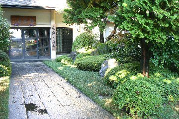

松門寺の坐禅会について
- 月例坐禅会・正法眼蔵提唱
- 毎月第２日曜日午後２時から午後６時ころまで（月により変更することがあります）月例の坐禅会を開きます。坐禪會に初めて參加される方は予約制となっています。日曜日のこの月例會のみで新規の方を受け付けますのでメールまたは電話にて前日までに予約をしてください。一度入會された方は予約の必要はありません。
-
13:30-14:00 新入指導
14:00-14:30 口宣 14:30-15:15 坐禅 15:30-16:15 坐禅 16:20-17:20 正法眼藏提唱
17:20-17:30 茶話会
- 月例夜坐・碧巖録提唱
- 毎月第４土曜日午後６時３０分から午後８時１５分まで（月により変更することがあります）。夜坐（やざ：夜の坐禪）を努めます。獨參も行います。普勸坐禪儀を看讀することがありますので「參禪要典」を持参してください。一度入會された方は予約の必要はありません。
- 18:30-20:15 坐禅・碧巖録口宣
- 日々の坐禪・動中の功夫
- 木曜日、午前（930-10:15,10:30-11:15）、午後（12:30-13:15,13:30-14:15）に坐禪をなさりたい方は受付けます。電話またはメールなどで前日21時までに、受付の返信を確認してから來てください。但し、木曜日、年末年始、彼岸、盂蘭盆期間は除きます。
- 摂心
- 偶数月の月例坐禅会の前日の土曜日から日曜日まで２日間の摂心（せっしん）を開きます。摂心は朝から晩まで泊りがけで集中的に坐禅をする修行です。初めての方は月例会または夜坐に出席して会員になられてから参加を受け付けます。
-
攝心の記事(「企業と人材」鷹取澄 1999/07/05 PDF）
- 居士の資格
- 坐禪會に熱心に參加される方には居士の資格、居士名、單（坐禪堂内での坐る席）を授けることがあります。居士の資格によって日々の坐禪を申し込む資格が得られます。
- 会費
- 坐禅会の入会金は１０００円、年会費は１０００円です。年会費を納められたかたには１年間月例坐禅会、摂心の連絡を致します。